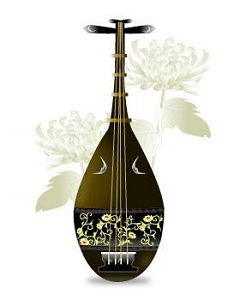

鹤冈舞魂
冯冯
去去来来 / 誊录
原说不随俗，但既到了镰仓，焉有不去参拜大佛之理？
离开了荒凉的日莲寺废墟，独自彳亍漫步，在此一古都，不识途径，路上不见行人，只有信步随喜而已。
镰仓在绵绵细雨之中，到处烟柳，古道狭窄，旧宇寂然，仿如置身唐代城市。初时感到异乡飘零，不胜凄楚，漫步既久，渐渐就喜爱此一幽雅宁静之古城。但见到处小溪，小桥流水，芳草遍野，篱花低垂。柴扉半掩，殊无车马之喧，更无霓虹灯与彩色巨幅广告。偶然瞥见和服老妇，持着油纸雨伞，脚穿日本齿屐，龙钟行踽，没入烟雨之中，又偶闻微弱竹笛吹奏，乐句哀伤而怪异，声声令人断场落泪，原来却是一介盲丐。在雨中摸索行走，视其竹笛，形如箫管而较短，不知如何会吹出如此催人心肺之哀伤笛音？
忆及读史，伍员吹箫求乞，莫非正是此一形象？只见那盲丐肩头蓑衣与竹叶巨帽，带着笛声，逐渐远去。
大佛不知在何处？东张西望，已找不到回车站之原路，迷失在此一寂静之古都郊区，只有胡乱随着古道的鹅卵石，在雨中前进，身上又未穿雨衣，已经雨珠盈头，衣衫湿濡了。不知流浪到了何处？也不知走了多少时候，找不到大佛，亦回不了车站，心不由得着急起来，不意镰镰仓荒凉一至于此，路上连行人都没有几个。
后来回东京，问起日本友人，方知镰仓人口只有五六万，而且镰仓一无工业及生产，人口都到横滨及东京做工去了，早出晚归，是以平时难以见行人，镰仓虽为古迹胜地，游人却不多，加以季节不对，所以更加冷清。一听我竟于此春雨绵绵之时独游镰仓，友人都以为异。
事实上，此行并无所憾，其时虽已春残花将尽，仍是处处缤纷，樱花落华遍地，杜鹃怒放，紫红处处，烟雨独行另有风味。
步行既久，忽见一山坡上，石级数百，宫殿数座，堪称古色古香，殊无一般日本神社之俗气，亦不似中国现代庙宇之华丽。不知是何寺院？
到了跟前，路边有矮檐木牌说明，全是日文，幸而书法端正，并非草书，笔画刻琢清楚，可以半读半猜，约莫猜到一些大意。
原来此地叫作鹤冈八幡宫，是源氏的家庙，源氏是幕府将军，于建久三年（一一九二年）被天皇封征夷大将军，开设幕府于镰仓，史称为镰仓幕府。源氏将军打倒平氏家族，挟天子以令诸侯，以镰仓为国都，奉天皇“白河法皇”迁都于此，但是第一代的源氏将军义朝于征讨平氏之时失败被杀，源氏之胜利是第二代所获得。
源义朝兵败被杀之时，第三子源赖朝当时随军，年方十四岁，在风雪中被平氏兵马所俘，将军平清盛要斩草除根将之砍头。
平清盛将军之母池之尼太院君见而怜之，从屏后出庭，代为乞请赦免其一死，平清盛是个孝子，顺从母命，但下令将此少年解往伊豆桎海岛监禁终生，又当地诸侯北条时政予以监管。
平清盛同时亦赦免了源义朝幼子一死，此一幼子是庶出之源义经。义经之生母原为近卫天皇皇后之宫中侍女，天皇赐给源义朝为妾，生下三子，兵乱中携三子逃命，因被平氏追捕太急，乃出而自投，并乞求平清盛将军赦免一死，当时此位长盘侍妃年方二十三岁，美艳无伦，平清盛惊为天人而纳之为妾，乃杀二子而赦免其幼子源义经，义经当年一岁。
常妃忍辱偷生，抚养幼子义经成人，始告以国破家亡之经过，并说明为了保源氏一脉而忍辱事敌为其妾妇之详情。讲完令儿子逃走带兵复仇，义经跪听母训泣不可仰，抬头时，其母已转入堂后，自刎而亡，遗命令其务必复仇。
十八岁之源义经含泪逃走至山中，召集源氏旧日家臣，发兵攻打平清盛，誓报杀父之仇。
在另一方面，十四岁之源赖朝早已长大成人，诸侯北条见其英俊有为，妻之以女，并发兵助其攻打平氏。于是源氏两兄弟，一东一西，分头攻打平氏，互相响应予以夹击。赖朝长于其幼弟义经十三岁，两兄弟从未见过面，因为赖朝是嫡妻热田氏之子，日本古代封建制度，正庶不同居一处，热田氏是贵族之女，似是一个郡主。兄弟二人合力击败平氏，将平氏予以灭族，平氏挟护天皇幼主年方八岁，被源氏兄弟追赶逃至日本西部今日之下关（即签订马关条约之地），最后一战，平氏海军全部覆灭于澶之浦，幼年天皇与平氏幼主由池之尼太院君抱持，蹈海自杀，平氏灭亡。
受池之尼太夫人之恩得免一死，源赖朝却不赦免恩人一死，其残酷可见！亦证明当时其不择手段，卑鄙可怕！（澶之浦之役，前已撰告，曾往该地凭吊。）源氏兄弟既灭平氏，重掌政权，就在皇都镰仓大建宫殿，此一鹤冈八幡宫，就是其中之一。
当时源氏兄弟渐渐不能相容，白河法皇心存挑唆，乃故意不问赖朝，径行封派义经为左卫门非违史（此衔不知何解）。由此开始，源氏兄弟之间发生权利争夺，竟至兵戎相见，骨肉相残，在镰仓大战一场，结果兄胜弟败，义经兵败逃亡，抛弃妻妾，在吉野山与爱妾静氏泣别，独自逃至奥州，终被其兄所捕归，予以斩首，其时义经年方三十岁。
源赖朝灭平氏，杀恩人池之尼，杀庶母，杀兄弟，其为人之残酷，难以形容，但据传说赖朝风流自赏，喜欢音乐歌舞，又喜欢文学，对于镰仓时代之文化不无建树。赖朝斩弟首之后，俘纳弟妾静氏御前（即夫人）为妾，兄纳弟妾，何异禽兽？静氏御前美貌无比，出身于“白拍子”（歌妓），能歌善舞，被夫兄硬纳为妾，其心之痛苦可想而知，但一弱女有何能力反抗。赖朝将军得意之余，令静氏在鹤冈八幡宫之响屧楼台歌舞以娱，即现在山坡上之古宫所在。
静氏不敢不从，盛装挥袖而舞，以娱暴君，舞袖低回，忆及亡夫义经之英俊多情，又悲其被兄斩首，复感怀身世，不觉泪下如雨，歌声哽咽，悲难自禁。一舞既罢，转入后室，玉手一挥，匕首插入心胸，倒地而亡。
原来此鹤冈八幡宫，正是当年薄命佳人回舞泣歌自杀之处！何等凄惨！
我仰望古宫，不禁淌流同情之泪，不由不拾级而上，尽百余级，到了宫前，不知何处为薄命佳人回舞响屧楼台？是否依效中国古代吴王夫差在姑苏所建之响屧？是否？鹤冈魂舞，千载遗恨，至今亦可解否？
遍视四方，岗峦起伏，烟雨凄迷，海天难辨，遥闻海潮之音，亦复如泣如诉，更显古宫之寂静悲惨。令人游兴阑珊，信步离去，亦再无心回首多看了。
观之源氏并未建设佛殿，只营宫室宗庙，而其行有喜杀戮，骨肉相残，可断其必非佛徒，若是佛徒，断无此种残酷之行为也。源氏纵是一代枭雄，其实所得又有若干？其子孙亦是被他人残杀殆尽而已，到头仍不过如日莲寺后之荒冢枯骨。江山、黄金、美人、权利，亦可一并装入骨坛之中否？
永忏楼随笔之二十五──《鹤冈舞魂》
原载香港《内明》第79期：1978年10月1日
书名：夜半钟声
作者：冯冯
出版：天华出版事业股份有限公司